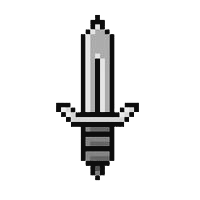
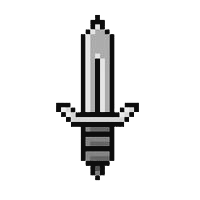

INVENTAIRE
Sélectionne un objet
 |
 |

|
||
Bienvenue dans l'entrée du donjon !!
Vous venez de descendre dans le donjon, l'air est lourd.
Devant vous, au nord, se tient une grande porte imposante, presque oppressante de par sa taille.
À l'est, une entrée vers un noir profond.
À l'ouest, une porte défoncée, maculée de sang séché. Ce n'est pas le couloir le plus accueillant de toute évidence....
Enfin, vous vous retournez vers le sud pour découvrir une autre porte plongeant dans la pénombre.
Où décidez-vous d'aller ?
Cela prend un peu de temps avant que vos yeux ne s'habituent à l'obscurité.
Le nord vous fait revenir sur vos pas.
À l'ouest, une porte blindée entrouverte, de la lumière s'en échappe.
À l'est, une porte faite de planches de bois avec une poignée ronde en fer.
Au sud, des barreaux solides, vous ne voyez pas ce qu'il y a derrière, il faudra vous en approcher pour le découvrir.
Vous ouvrez la porte, elle est épaisse et produit un fort grincement.
Cela réveille quelque chose de la taille d'un homme, il est en armure et à l'air décidé à se battre.
Voulez-vous combattre ou retourner dans le couloir ?
Vous vous approchez et trouvez un vieillard croupissant dans une petite cellule insalubre.
Vous ouvrez la porte.
Une odeur de moisi s'en échappe en même temps qu'un rat.
C'est un débarras plein de rangements et de nourriture qui a, de toute évidence, dépassée sa date limite de consommation.
Vous vous demandez si vous pouvez trouver quelque chose d'utile dans ce fatras.
Une salle vidée de tout ce qu'elle contenait, probablement pillée et dévastée par le temps.
Vous rentrez dans un couloir avec une tapisserie au sud.
Une porte de nouveau brisée au nord, la trace de sang a l'air de continuer dans cette salle.
Et une porte en bois à l'ouest.
Après avoir enjambé les débris restant, vous trouvez les restes de ce qui semble être un aventurier, comme vous.
Cette découverte vous fait froid dans le dos, vous espérez avoir plus de chances que lui.
À peine cette pensée s'évapore de votre esprit, vous apercevez une créature qui jaillit de l'ombre pour engager le combat.
La salle est très peu éclairée.
Mais vous arrivez à distinguer une estrade.
Sur cette dernière il y a un socle, et sur le socle, une épée à l'allure puissante.
Elle a l'air comme neuve, et dire qu'elle est restée là, tout ce temps, comme à vous attendre....
Après vous être creusé les méninges, vous passez la porte fraîchement ouverte.
Dedans, une immense salle bien mieux éclairée que tout ce que vous avez visité jusqu'à présent.
Vous marchez sur un tapis rouge, celui-ci même vous mène à un grand trône.
Une créature vous regarde, avachie depuis des années sur ce trône.
"Encore un..." soupire-t-il en se levant difficilement de sa chaise ornée.
Il ramasse un hachoir grand comme un homme et le tend vers vous.
Vous n'avez plus le choix, c'est lui ou vous.
Vous rentrez dans une salle haute mais pas très large, ni très remplie d'ailleurs.
Au centre se trouve une statue de gargouille en pierre.
Elle ouvre les yeux pour vous poser une question...
"Quand fut célébrée l'Union d'Ouranos et de Hel ?"
"Répondez et avancez"
Vous rentrez dans une petite salle.
Sa taille est d'ailleurs assez décevante quand on la compare à l'allure de la porte.
Il y a un dessin gravé dans les blocs de pierre qui compose le mur.
On y voit un pont, garder par un lion à tête d'homme.
La créature fait face à ce qui semble être un petit groupe de soldats.
Il y a écrit, au-dessus du gardien hybride, une phrase cryptique.
"Votre race"
Vous ouvrez la porte sans pouvoir rentrer.
La pièce devant vous est bien trop petite et encombrée par toutes sortes de choses pour rentrer dedans.
Cela dit, vous pourriez trouver un objet intéressant dans tout ce bazard.
Vous rentrez dans un couloir vide.
Il y a une petite porte d'apparence fragile au nord.
Et une double porte décorée à l'ouest.
Cette dernière attire votre attention.
Une salle poussiéreuse. Un rai de lumière tombe doucement sur un piédestal sur lequel repose un livre ouvert.
La porte semble verrouillée, trouvez la clef pour l'ouvrir.
La porte est déverrouillée, vous pouvez entrer.
Vous n'avez pas la clef pour ouvrir la porte.
La porte est déverrouillée, vous pouvez entrer.
Vous n'avez pas la clef pour ouvrir la porte.
Vous avez déjà trouvé la clef, elle est dans votre main.
Vous trouvez une clef, peut-être vous permettra-t-elle d'ouvrir des portes.
La clef ne vous servira à rien ici.
Vous n'avez pas de clef.
La majeure partie du texte est illisibe. Vous parvenez malgré tout à déchiffrer une phrase :
"Un cadavre ne se venge pas des injures."
Qu'est-ce que ça peut bien vouloir dire ?
Il n'y a rien à lire ici.
"Un cadavre ne se venge pas des injures" ?
Cela me dit vaguement quelque chose... Un poète je crois... Peut-être devriez vous chercher dans un genre d'encyclopédie.
Je ne saurais vous dire pourquoi je pense à cela mais j'ai souvenance d'un ami navigateur qui en savait beaucoup sur ce genre de choses...
Merci de m'avoir tiré d'ici ! Vous ne croiriez pas la quantité de vermine qui grouille dans ce cachot.
Je vous en prie ! Sortez-moi d'ici !
Il ne semble plus en état de vous répondre.
" Un intrus ! Aux armes ! "
" Nyeerrrgh... "
" Nyarrgh ! Yhttah ! Kilili ! "
" Petit humain, tout petit ! Toi manger ma lame, puis moi manger ta chair ! "
Vous vous sentez très seul...
La gardouille vous ouvre le chemin à l'est pour vous laisser passer.
Année de terreur certes, mais très bonne pour la poésie.
La gargouille bloque l'accès.
Vous ne pouvez pas aller plus loin.
Le piège est déjà désactivé.
Vous tentez de désamorcer le piège.
Vous désamorcez le piège avec succès.
Alors que vous tentez de désamorcer le piège, celui-ci se déclenche et vous tire une flèche dans l'épaule.
Vous ne voyez aucun piège à l'horizon.
Vous avez déjà ramassé la dague.
Vous ramassez la dague et la passez à votre ceinture. Vous avez la sombre impression que vous risquez d'en avoir besoin bientôt.
Vous examinez la dague que vous tenez serrée dans votre poing. Son contact froid et métallique vous rassure.
C'est vrai que ça pourrait vous être utile.
En fouillant le débarras, vous remarquez une clef luisant au fond d'un seau.
Au centre de la salle se trouve une épée magnifique.
En examinant attentativement le mur, vous remarquez qu'une entaille contient ce qui semble être un piège.
Vous ne trouvez rien, hormis une vieille dague.
Malgré tous vos efforts, vous ne trouvez rien.
Cette recherche vous a mené à quelque chose...
Le cadavre du garde git dans une marre de son propre sang.
Les restes sanglants de la créature forment un tas grotesque dans un coin de la salle.
Le géant s'écroule, vaincu.
Le géant est déjà mort.
Tu veux attaquer qui ? Le mur ?
La porte est verrouillée.
Alors que vous vous approchez de la porte, vous entendez un son sec. Vous avez déclenché un piège et un projectile s'est planté dans votre dos.
Je n'ai pas compris, veuillez entrer une commande valide.
Le combat s'engage.
Not Yet Implemented (Cheh).
Vous ne voyez rien de tel dans les parages.
Vous tentez de saisir l'épée du garde, mais il ne semble pas vouloir vous laisser faire.
Vous n'apercevez aucun piège.
Vous remarquez un piège sur le côté sud.
Vous pourriez être intéressé par l'épée que le garde a laissé derrière lui.
La seule chose qui pourrait vous intéresser ici est l'épée que détient le garde.
La créature s'effondre avec un hurlement déchirrant.
Le garde titube et s'effondre dans une marre de sang. Il laisse tomber un objet.
Vous avez triomphé de votre adversaire.
Vous remarquez l'épée que le garde laisse tomber en expirant.
Sélectionne un objet
|
|
|

|
||
T'ES MORT, T'ES ÉCLATÉ